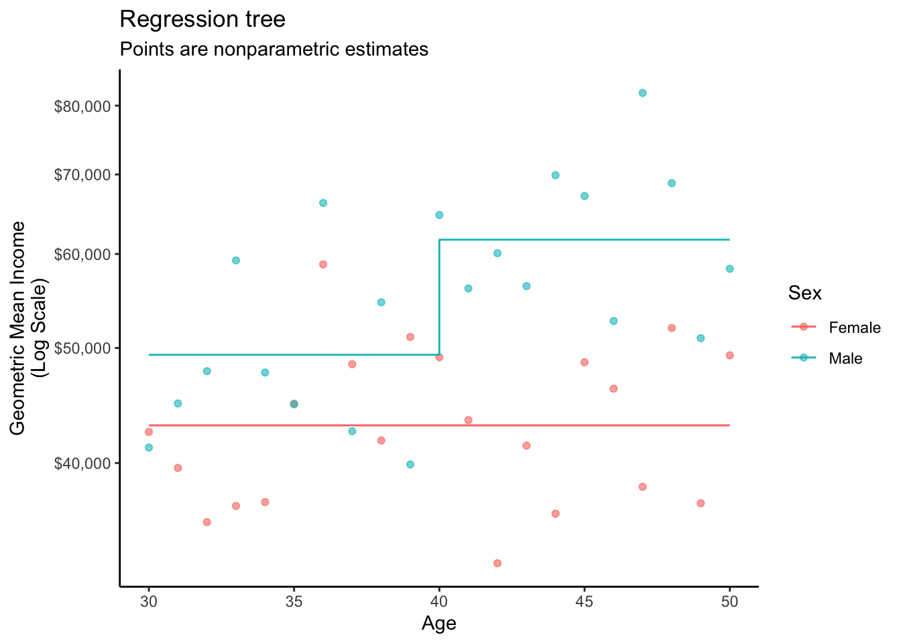

library(tidyverse)Machine Learning
Under a worldview in which descriptive models exist to produce \(\hat{Y}\) instead of \(\hat\beta\), machine learning (ML) becomes an easy plug-in replacement for classical statistics. We only need \(\hat{Y}\), and machine learning estimators might produce good \(\hat{Y}\) values.
We illustrate by the example from Define Models and Evaluate Models. Below, we apply several machine learning estimators to the task of modeling geometric mean income for male and female respondents at age 30.
To run the code on this page, you will need the tidyverse package.
We will also set the seed so that it is possible to exactly reproduce these results.
set.seed(90095)Prepare data
We first load the simulate function (see Simulate a Sample) to create a sample of 1,000 observations. We make the sample larger because many ML models will perform better at larger sample sizes.
simulated <- simulate(n = 1000)# A tibble: 1,000 × 4
year age sex income
<dbl> <dbl> <chr> <dbl>
1 2011 48 female 351418.
2 2012 38 female 28066.
3 2013 38 female 133671.
# ℹ 997 more rowsWe then define the cases at which we want to make predictions.
to_predict <- tibble(
sex = c("female","male"),
age = c(30,30)
)# A tibble: 2 × 2
sex age
<chr> <dbl>
1 female 30
2 male 30The sections below show several statistical and machine learning estimators.
OLS review
As a brief review, recall that this procedure works with OLS. First, learn a model.
fit <- lm(log(income) ~ sex * age, data = simulated)Then make predictions.
to_predict |>
mutate(log_yhat = predict(fit, newdata = to_predict)) |>
mutate(yhat = exp(log_yhat))# A tibble: 2 × 4
sex age log_yhat yhat
<chr> <dbl> <dbl> <dbl>
1 female 30 10.6 41119.
2 male 30 10.8 47207.The graph below visualizes this fit.
Thin-plate spline
A thin-plate spline (see Wood 2017) estimates a smooth response to a continuous predictor. The mgcv package provides support for thin-plate splines and other smoothers.
library(mgcv)Using the package, we can estimate a smooth response to the predictor age, separately by the factor variable sex.
fit <- gam(
log(income) ~ sex + s(age, by = sex),
# For GAM, the "by" variable must be a factor.
# Make it a factor in the data line here.
data = simulated |> mutate(sex = factor(sex))
)Then make predictions.
to_predict |>
mutate(log_yhat = predict(fit, newdata = to_predict)) |>
mutate(yhat = exp(log_yhat))# A tibble: 2 × 4
sex age log_yhat yhat
<chr> <dbl> <dbl[1d]> <dbl[1d]>
1 female 30 10.6 41119.
2 male 30 10.7 45992.The graph below visualizes this fit.
Regression tree
A regression tree recursively partitions the data by repeatedly splitting into subsets (“branches”) so that the terminal nodes (“leaves”) are subgroups in which the outcome is relatively homogeneous. The algorithm predicts the mean within the subgroup. While there are many versions of decision trees, the most common makes splits to maximize heterogeneity of the mean response across the nodes and minimize heterogeneity within the nodes.
The rpart package is one way to fit a regression trees,
library(rpart)which you can fit using a model formula as with OLS.
fit <- rpart(log(income) ~ sex + age, data = simulated)Then make predictions.
to_predict |>
mutate(log_yhat = predict(fit, newdata = to_predict)) |>
mutate(yhat = exp(log_yhat))# A tibble: 2 × 4
sex age log_yhat yhat
<chr> <dbl> <dbl> <dbl>
1 female 30 10.7 43034.
2 male 30 10.8 49341.The graph below visualizes the fit that made these predictions.

Random forest
A random forest repeatedly estimates regression trees on different subsamples of the data. This induces variation across the trees so that the average of the trees is an ensemble estimator with good properties.
The grf package (Athey, Tibshirani, and Wager 2019) is one tool to estimate a random forest, with automated parameter tuning and other functionality available for causal goals.
library(grf)To use the regression_forest() function, one first converts the predictors to a model matrix and the outcome to a vector. You will also need a model matrix at which to make predictions.
X <- model.matrix(~ sex + age, data = simulated)
Y <- log(simulated$income)
X_to_predict <- model.matrix(~ sex + age, data = to_predict)With these prepared inputs, estimate the forest.
fit <- regression_forest(
X = X,
Y = Y,
tune.parameters = "all"
)Then make predictions.
to_predict |>
mutate(log_yhat = predict(fit, newdata = X_to_predict)$predictions) |>
mutate(yhat = exp(log_yhat))# A tibble: 2 × 4
sex age log_yhat yhat
<chr> <dbl> <dbl> <dbl>
1 female 30 10.7 42947.
2 male 30 10.8 48049.The graph below visualizes this fit.

Closing thoughts
Many machine learning approaches become available to you when you follow a \(\hat{Y}\) recipe for descriptive modeling.
- Define the learning data (e.g.,
simulated) - Define the predictor values at which to predict (e.g.,
to_predict) - Make predictions
This recipe works just as well even when models do not involve coefficients!
Code for Stata users
This code assumes you have already generated a sample as at the bottom of the Simulate a Sample page. The code below makes a prediction using OLS.
Note: I am mostly not a Stata user, and this is provided for secondary pedadogical purposes in case some people do not use R. If you are a Stata user, feel free to let me know how to improve this code.
* Estimate a linear model
reg log_income sex age c.age#i.sex
* Preserve current data and remove from memory
preserve
clear
* Create new data to predict
input str6 sex float age
"female" 30
"male" 30
end
encode sex, gen(factorsex)
keep age factorsex
rename factorsex sex
* Make predictions
predict log_yhat
gen yhat = exp(log_yhat)
* Print predicted values
list
* Restore the original simulated data
restore